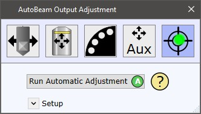
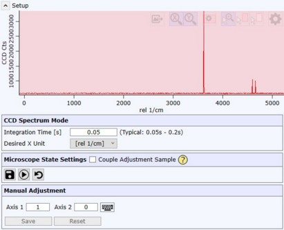
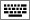
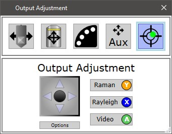

|
输出调整
|
AutoBeam 输出耦合器调整

运行自动调整
启动自动调整序列并尝试找到最大输出信号。
如果此操作成功，调整将自动保存为当前激光和输出的组合。
设置

CCD 光谱模式
允许定义实时光谱的积分时间和X单位。
显微镜状态设置
耦合调整样品
可耦合接入或断开调整样品。
保存
为当前激光-输出组合保存以下状态：
执行
设置保存为用户设置的显微镜状态。
恢复
恢复出厂设置。
手动调整
轴1 / 轴2
可手动移动两个轴来调整激光输出。
可单击

按钮以使用键盘上下左右箭头键移动两个轴。保存
为当前激光和输出的组合保存当前输出调整（轴位置）。
重置
重置当前激光和输出组合的当前输出调整。

要启动激光输出调整，首先在 WITec Control 中启动 示波器。
有关移动惯性驱动的帮助，请参见 惯性驱动控制。
使用 UI摇杆控制 或 EasyLink控制器 调整调整镜。
电动激光输出调整仅在具有自动输出塔时可用。
拉曼
为拉曼信号设置光路。
在第一步中使用此模式对准激光。
仅在所有方向使用单步来优化信号。
如果没有信号，请尝试使用瑞利或视频调整。
瑞利
为瑞利信号设置光路（移除滤光片）。
仅在所有方向使用单步来优化信号。
如果仍然没有信号，请使用视频调整。
瑞利调整模式仅在激光耦合器具有可移除滤光片时可用。
视频
为视频调整设置光路，并将视频实时视图切换到调整摄像机。
尝试将激光光斑移动到红色圆圈内。
如果激光光斑距离较远，请使用连续移动功能。
完成此任务后，请关闭窗口并停止 WITec Control 示波器。